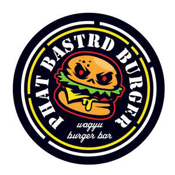

Trade Mark Journal No.2025/036 5 September 2025
UK00004251377 19 August 2025 (35,43)

- Class 35
- Online ordering services in the field of restaurant take-out and delivery; On-line ordering services in the field of restaurant take-out and delivery; Restaurant management for others; Business advice relating to restaurant franchising.
- Class 43
- Take-away restaurant services; Fast-food restaurant services; Take-out restaurant services; Sushi restaurant services; Ramen restaurant services; Salad bars [restaurant services]; Carry-out restaurants; Carvery restaurant services; Tempura restaurant services; Takeaway food services; Takeaway food and drink services; Catering in fast-food cafeterias; Take-away food and drink services; Take-away food services; Grill restaurants; Bar and restaurant services; Restaurant and bar services; Serving food and drink in doughnut shops; Take-away fast food services; Serving food and drink in restaurants and bars; Restaurant services; Serving food and drink for guests in restaurants; Hotel restaurant services; Fast food restaurants; Washoku restaurant services; Restaurants; Udon and soba restaurant services; Provision of food and drink in restaurants; Food and drink catering; Catering of food and drink; Catering (Food and drink -); Self-service restaurant services; Mobile restaurant services; Catering of food and drinks; Takeaway services; Restaurant services for the provision of fast food; Japanese restaurant services; Providing food and drink in doughnut shops; Eateries; Restaurants (Self-service -); Self-service restaurants; Serving food and drink in Internet cafes; Providing food and drink in restaurants and bars; Restaurant reservation services; Delicatessens [restaurants]; Providing food and drink for guests in restaurants; Food and drink catering for banquets; Spanish restaurant services; Food and drink catering for cocktail parties; Pizza parlors; Food and drink catering for institutions; Reservation of restaurants; Providing food and drink in bistros; Serving food and drinks; Catering for the provision of food and drink; Serving food and drink for guests; Booking of restaurant seats; Tourist restaurants; Cocktail lounge buffets; Bistro services; Providing food and drink in Internet cafes; Salad bars; Restaurant services incorporating licensed bar facilities; Catering for the provision of food and beverages; Providing of food and drink via a mobile truck; In so far as the aforesaid services relating to the provision of beef and beef products being made wholly or principally of Wagyu beef.
Chris Fraser
Chris Fraser